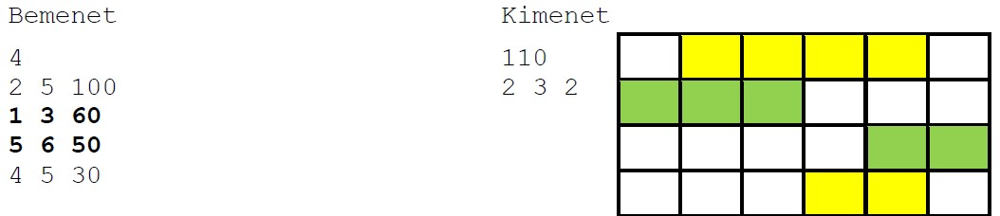
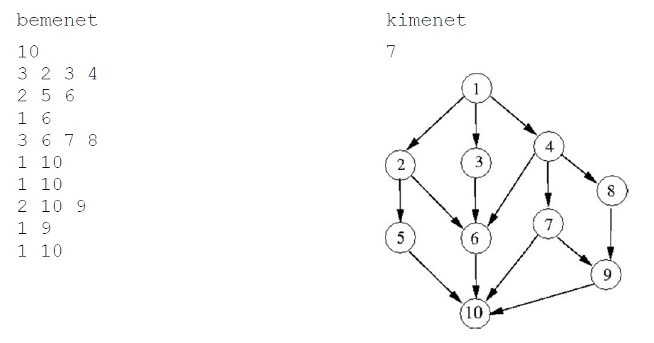
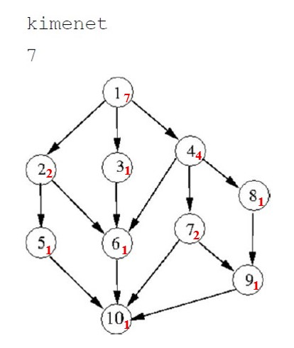

Egy városban N fesztiválra jelentkeztek be rendezők. Mindegyikről tudjuk, hogy mettől meddig tervezik tartani és mennyi bevételt remélnek tőle. Egy időben csak egy fesztivál tarthatnak.
Írj programot, amely megadja, hogy mekkora az elérhető legnagyobb bevétel.
A standard bemenet első sorában a fesztiválok száma van (1 ≤ N ≤ 100 000). A következő N sorban egy-egy fesztivál első napja, utolsó napja (1 ≤ Elsői ≤ Utolsói ≤ 100 000) és a várt bevétele (1 ≤ Bevételi ≤ 10 000) található.
A standard kimenet első sorába az elérhető legnagyobb bevételt kell írni. A második sorba kell írni a kiválasztott fesztiválokat: a sorban az első szám a fesztiválok száma legyen, ezt kövesse azoknak a fesztiváloknak a sorszámai (tetszőleges sorrendben), amelyek ütközésmentesen megtarthatók és a legnagyobb bevételt eredményezik. Több megoldás esetén bármelyik megadható.
Bemenet
4
2 5 100
1 3 60
5 6 50
4 5 30
Kimenet
110
2 3 2
def masodik_elem(fesztival):
return fesztival[1]
fesztival_db = int(input())
fesztivalok = []
for i in range(fesztival_db):
elso_nap, utolso_nap, bevetel = map(int, input().split())
fesztivalok.append((elso_nap, utolso_nap, bevetel, i + 1))
fesztivalok = sorted(fesztivalok, key=masodik_elem)
utolso_nem_utkozo = []
for i in range(fesztival_db):
elso_nap_i, utolso_nap_i, bevetel_i, sorszam_i = fesztivalok[i]
j = i - 1
while j >= 0:
elso_nap_j, utolso_nap_j, bevetel_j, sorszam_j = fesztivalok[j]
if utolso_nap_j < elso_nap_i:
break
j -= 1
utolso_nem_utkozo.append(j)
max_bevetel = [0] * (fesztival_db + 1)
valasztott_fesztivalok = [[] for _ in range(fesztival_db + 1)]
for i in range(1, fesztival_db + 1):
elso_nap, utolso_nap, bevetel, sorszam = fesztivalok[i - 1]
kihagyott_bevetel = max_bevetel[i - 1]
ha_beszamoljuk_index = utolso_nem_utkozo[i - 1] + 1
ha_beszamoljuk_bevetel = max_bevetel[ha_beszamoljuk_index] + bevetel
if kihagyott_bevetel > ha_beszamoljuk_bevetel:
max_bevetel[i] = kihagyott_bevetel
valasztott_fesztivalok[i] = valasztott_fesztivalok[i - 1][:]
else:
max_bevetel[i] = ha_beszamoljuk_bevetel
valasztott_fesztivalok[i] = valasztott_fesztivalok[ha_beszamoljuk_index][:] + [sorszam]
print(max_bevetel[fesztival_db])
print(len(valasztott_fesztivalok[fesztival_db]), *valasztott_fesztivalok[fesztival_db])Tekintsük a jól ismert Hanoi tornyai problémának azt a változatát, amikor a kezdeti játékállásban és a cél játékállásban is a korongok tetszőlegesen helyezkedhetnek el, feltéve, hogy mindegyik nála nagyobb korongon van (vagy az alsó). A játék során egy lépésben egy korongot mozgathatunk valamelyik torony tetejéről egy másik torony tetejére, ha ott nála nagyobb korong van.
A feladat az, hogy rakjuk át egyesével mozgatva a korongokat, betartva, hogy korongot csak nála nagyobbra rakhatunk. Készíts programot, amely megad egy olyan lépéssorozatot, amely hatására a kezdeti játékállásból a cél játékállás keletkezik.
A standard bemenet első három sora a kezdeti, a második három sora a cél játékállást tartalmazza, rendre az első (1), a második (2) és harmadik (3) torony korongjait csökkenő sorrendben. Minden sort a 0 szám zárja (ami nem korong méret). Ha k szerepel valamelyik sorban, akkor minden k-nál kisebb szám is ott van valamelyik torony sorában. A legnagyobb korong mérete legfeljebb 16.
A standard kimenet első sora a végrehajtandó lépések számát tartalmazza. Minden további sor egy lépést adjon meg, amelyeket ebben a sorrendben végrehajtva a cél játékállás keletkezik. Egy lépést két egész szám adjon meg: honnan és hova, ami azt jelenti, hogy melyik torony tetejéről melyik torony tetejére kell átrakni a korongot.
kezdo_tornyok = []
for _ in range(3):
sor = list(map(int, input().split()))
kezdo_tornyok.append(tuple(sor[:-1]))
cel_tornyok = []
for _ in range(3):
sor = list(map(int, input().split()))
cel_tornyok.append(tuple(sor[:-1]))
kezdo_allapot = tuple(kezdo_tornyok)
cel_allapot = tuple(cel_tornyok)
def uj_allapot(allapot, honnan, hova):
tornyok = [list(t) for t in allapot]
if len(tornyok[honnan]) == 0:
return None
felso_korong = tornyok[honnan][0]
if len(tornyok[hova]) > 0 and tornyok[hova][0] < felso_korong:
return None
tornyok[honnan] = tornyok[honnan][1:]
tornyok[hova] = [felso_korong] + tornyok[hova]
return (tuple(tornyok[0]), tuple(tornyok[1]), tuple(tornyok[2]))
sor = [kezdo_allapot]
fej = 0
szulo = {kezdo_allapot: None}
lepes = {kezdo_allapot: None}
while fej < len(sor):
most = sor[fej]
fej += 1
if most == cel_allapot:
break
for honnan in range(3):
for hova in range(3):
if honnan != hova:
kovetkezo = uj_allapot(most, honnan, hova)
if kovetkezo is not None and kovetkezo not in szulo:
szulo[kovetkezo] = most
lepes[kovetkezo] = (honnan + 1, hova + 1)
sor.append(kovetkezo)
utvonal = []
akt = cel_allapot
while szulo[akt] is not None:
utvonal.append(lepes[akt])
akt = szulo[akt]
utvonal.reverse()
print(len(utvonal))
for honnan, hova in utvonal:
print(honnan, hova)A Budapest-Székesfehérvár vasútvonalon egy vonat kalauza minden állomáson feljegyezte, hogy hányan szálltak fel a vonatra, illetve hányan szálltak le. (Budapesten biztos nincs leszálló, Székesfehérváron biztos nincs felszálló, aki leszállt, az nem száll vissza.)
Készíts programot, amely megadja azt az állomást, ahol a legkevesebbel nőtt az utasok száma a vonaton!
A standard bemenet első sorában az állomások száma van (1≤N≤1000). A következő N sorban az egyes állomásokon leszállók (0≤le≤800) és felszállók (0≤fel≤800) száma van..
A standard kimenet első sorába azon állomás sorszámát kell kiírni, ahol a legkevesebbel (de legalább 1-gyel) nőtt az utasok száma a vonaton! Több megoldás esetén a legkisebb sorszámút kell kiírni!
Bemenet
6
0 15
10 30
0 32
48 0
20 27
26 0
Kimenet
5def vonat():
allomasok_szama = int(input().strip())
legkisebb_novekedes = 10**9
valasz_allomas = -1
for allomas in range(allomasok_szama + 1):
leszallo, felszallo = map(int, input().strip().split())
novekedes = felszallo-leszallo
if novekedes >= 1:
if novekedes < legkisebb_novekedes:
legkisebb_novekedes = novekedes
valasz_allomas = allomas
print(valasz_allomas)
Egy hegyoldalon lévő sípályán minden választható lesiklási útvonal a start ponttól a célpontig vezet. A pálya elágazási pontokat tartalmaz, csak ilyen pontokon lehet a lesiklás során pályaszakaszt váltani. Két elágazási pont közötti részt nevezzük pályaszakasznak. Minden verseny előtt a szervezők ellenőrzik a pálya alkalmasságát. Ebből a célból ellenőrök mennek végig a pályán. Minden ellenőr a start ponttól indul és végig megy egy útvonalon a célpontig. Az a cél, hogy a legkevesebb ellenőrt kelljen alkalmazni ahhoz, hogy minden pályaszakaszon áthaladjon legalább egy ellenőr.
A pálya olyan, hogy a térképe lerajzolható úgy, hogy bármely két pályaszakasz nem metszi egymást (nincs sem alagút, sem felüljáró), csak elágazási pontban lehet közös pontjuk. Két elágazási pont között legfeljebb egy pályaszakasz van. Minden pályaszakaszon csak egyirányban lehet lesiklani, a magasabban lévő pontból az alacsonyabban lévő pont felé. Bármely elágazási pont elérhető a start pontból és bármely elágazási pontból el lehet jutni a célpontba.
Készíts programot, amely kiszámítja, hogy legkevesebb hány ellenőrt kell alkalmazni.
A standard bemenet első sorában az elágazási pontok száma (1≤N≤20000) van. Az elágazási pontokat az 1,…,N számokkal azonosítjuk, a start pont azonosítója az 1, a célponté N. A további N-1 sor közül az i-edik az i-edik elágazási pontból induló pályaszakaszokat adja meg Nyugatról Kelet felé haladó sorrendben. A sorban az első szám a pontból induló pályaszakaszok száma, ezt követik azon elágazási pontok sorszámai, ahova a pályaszakasz vezet.
A standard kimenet első és egyetlen sorába egy egész számot kell írni, az alkalmazandó legkevesebb ellenőr számát!
bemenet
10
3 2 3 4
2 5 6
1 6
3 6 7 8
1 10
1 10
2 10 9
1 9
1 10
kimenet
7
Szükséges ellenőrök száma: élek összeadása, lentről felfelé

def main():
n = int(input().strip())
palya = [[] for _ in range(n + 1)]
for i in range(1, n):
sor = list(map(int, input().split()))
db = sor[0]
celpontok = sor[1:]
palya[i] = celpontok
ellenor_szukseg = [0] * (n + 1)
for pont in range(n, 0, -1):
if len(palya[pont]) == 0:
ellenor_szukseg[pont] = 1
else:
osszeg = 0
for kovetkezo in palya[pont]:
osszeg += ellenor_szukseg[kovetkezo]
ellenor_szukseg[pont] = osszeg
print(ellenor_szukseg[1])
# if __name__ == "__main__": ##csak ha le szeretnénk teszteni a kódunkat
# main()